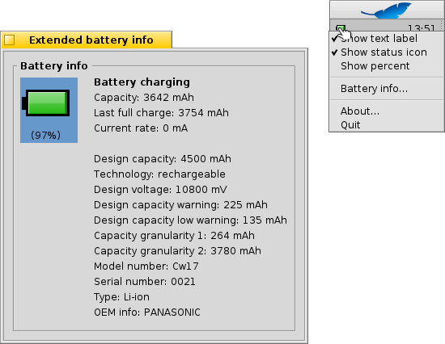

Estado de Energia
Estado de Energia
| Deskbar: | ||
| Localização: | /boot/system/apps/PowerStatus | |
| Definições: | ~/config/settings/PowerStatus settings |
O Estado de Energia exibe informaçãosobre o nível da bateria, portanto é útil apenas em computadores móveis. Se não estiver ainda em execução, carregar o miniaplicativo irá perguntar se deve abrir em modo de janela ou como ícone na Deskbar. No modo de janela é possível redimensonar o ícone redimensionando a janela e utilizando a alça do Replicante para arrastá-lo à Área de Trabalho.
Onde quer que esteja instalado, é operado através do menu de contexto, pelo clique com o botão direito do mouse.
Nota: o Estado de Energia requer um suporte ACPI funcional.
O menu de contexto oferece estas opções:
| Exibe o nível da bateria em percentual ou pelo tempo restante. | ||
| Exibe o ícone do miniaplicativo. | ||
| Alterna entre exibir o nível da bateria em percentual ou o tempo restante ( tem que estar ativo). | ||
| Exibe a janela de informação ampliada sobre a bateria. | ||
| Exibe a janela Sobre. | ||
| Fecha o miniaplicativo Estado de Energia. |
Quando está ativo, o nível da bateria é mostrado entre parêntesis quando em carga.